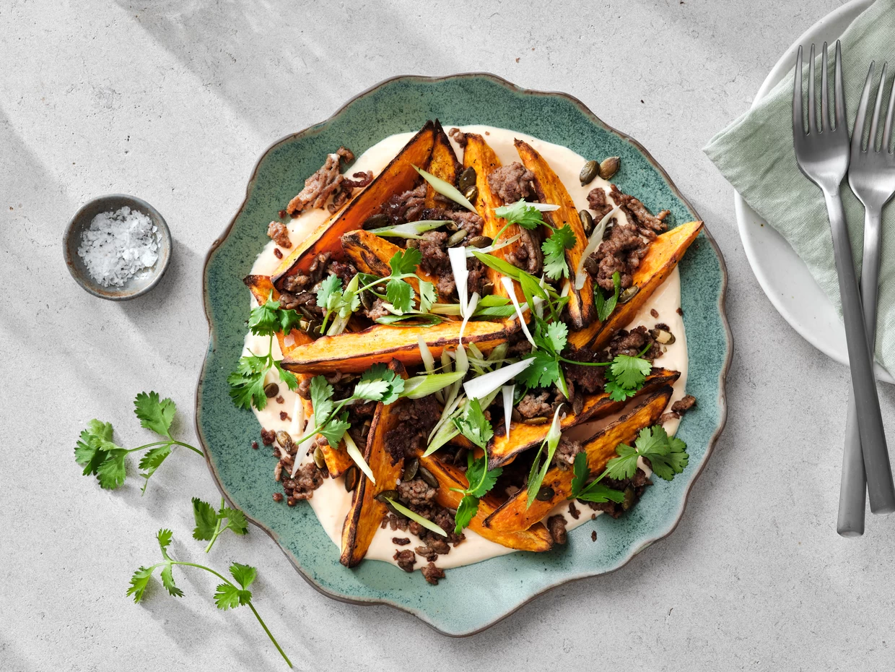
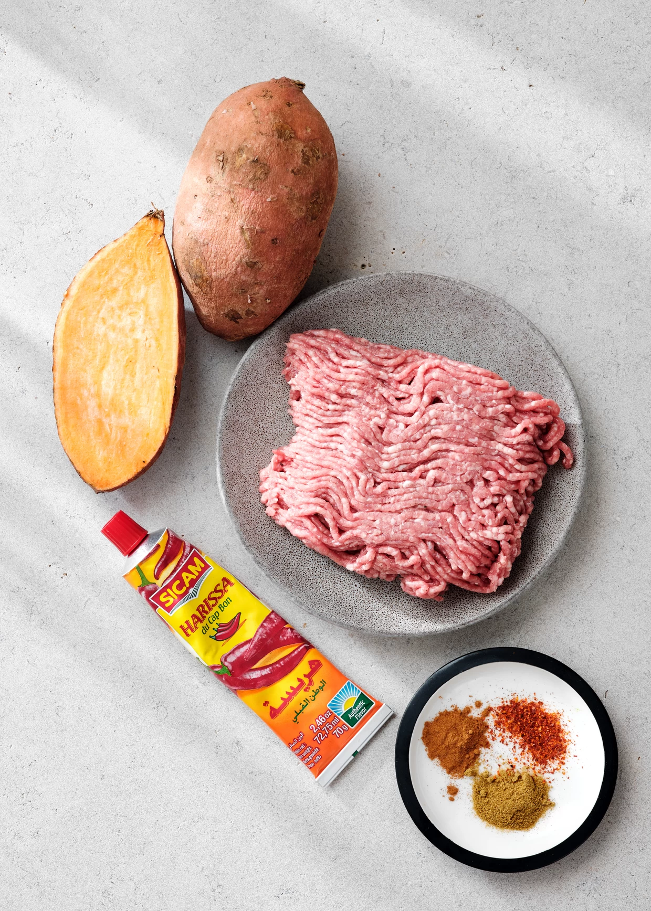

Zoete aardappel met harissa-zure room en lamsgehakt

Zoete aardappel met harissa-zure room en lamsgehakt
Ingrediënten - 2 personen
400 g zoete aardappel
olijfolie of boter
peper en zout
150ml zure room
1 à 2 tl harissa
2 el pompoenpitten
200 g lamsgehakt
½ tl kaneelpoeder
½ tl komijnpoeder
snuf chiliflakes
zeste van ½ onbespoten citroen
2 lente-uitjes, versnipperd
handje koriander
De belangrijkste ingrediënten

Instructies
Verhit de oven voor op 210°C. Schil en snijd de zoete aardappel in wedges. Besprenkel met olijfolie,
peper en zout en rooster op een metalen bakplaat in ongeveer 20 min. goudbruin
Meng de zure room met harissa en kruid met peper en zout. Rooster de pompoenpitten in een droge pan over
een middelhoog tot laag vuur tot ze hoorbaar poffen. Haal van het vuur en laat afkoelen.
Verhit een klontje boter in een pan en roerbak het lamsgehakt in enkele minuten gaar. Kruid met
kaneelpoeder, komijnpoeder, chiliflakes, peper en zout.
Smeer de zure room uit over een bord, schik er de zoete aardappelpartjes over Werk af met het lamsgehakt, de
pompoenpitten, citroenzeste, lente-ui en koriander.